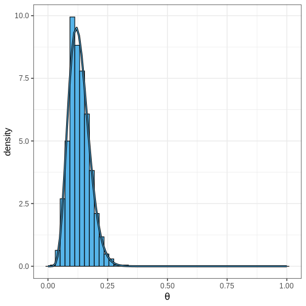

Basics of Bayesian statistics
Last updated on 2024-02-06 | Edit this page
Overview
Questions
- What is Bayesian statistics?
Objectives
- Basic idea of Bayesian statistical thinking
- Bayesian formula: prior, likelihood, posterior
- Grid approximation
- Communicating posterior information
- Point estimates
- Credible intervals
- Probabilities for defined sets
- Working with posterior samples
Bayes’ formula
The fundamental ingredient of Bayesian statistics and probabilistic thinking is the Bayes’ theorem, stated as
\[ p(\theta | X) = \frac{p(\theta) p(X | \theta)}{p(X)} \\ \]
Given a statistical model, the theorem can be used to infer probabilities of the values of the model parameters \(\theta\) conditional on the available data \(X\). These probabilities are quantified by the posterior distribution \(p(\theta | X)\). The prior distribution \(p(\theta)\) is used to impose beliefs about \(\theta\) without taking the data into account. The likelihood function \(p(X | \theta)\) gives the probability of the data conditional on \(\theta\) and specifies the effect of data on the posterior. The denominator on the right-hand side \(p(X)\) is called the marginal probability, which is often practically impossible to compute, and usually the proportional version of the Bayes’ formula is used:
\[ p(\theta | X) \propto p(\theta) p(X | \theta). \]
The proportional Bayes’ formula produces an unnormalized posterior distribution which can then be normalized to access the normalized posterior.
Example: handedness
Let’s illustrate the use of the Bayes’ theorem with an example.
Assume we are trying to estimate the prevalence of left-handedness in humans, based on a sample of \(N=50\) students, out of which \(x=7\) are left-handed and 43 right-handed.
The outcome is binary and the students are assumed to be independent (e.g. no twins), so the binomial distribution is the appropriate choice for likelihood:
\[ p(X|\theta) = Bin(7 | 50, \theta). \]
Without further justification, we’ll choose \(p(\theta) = Beta(\theta |1, 10)\) as the prior distribution, so the unnormalized posterior distribution is
\[ p(\theta | X) = Bin(7 | 50, \theta) \cdot Beta(\theta | 1, 10). \]
Below, we’ll plot these functions. Likelihood has been normalized for better illustration.
Communicating posterior information
The posterior distribution \(p(\theta | X)\) is the target of Bayesian data analysis. It contains all the information about \(\theta\) given the data, chosen model, and the prior beliefs. However, a distribution in and of itself is usually not very informative, especially if it has an even moderately exotic analytical form. The more common scenario is, that the analytical form is not known.
Simply by looking at the figure above, we can get some understanding of the probable values for \(\theta\). Value between 0 and 0.25 seem to be the most probable and there practically no posterior mass for values close to 1.
However, in order to communicate posterior information, we need some means of quantifying the information.
Two types of estimates are commonly used: point estimates, such as posterior mean, mode and variance, and posterior intervals, which give probabilities for ranges of values.
Two types of posterior intervals are of interest on this course:
Credible intervals (CIs) are intervals that leave equal posterior mass below and above it. They are computed as posterior quantiles. For example, the 90% CI would be between the 5% and 95% quantiles.
Defined boundary intervals which are computed as the posterior mass for part of the parameter space, and can quantify the probability for a given parameter condition. For instance, we might be interested in the posterior probability that \(\theta > 0\), \(0<\theta<0.5\), or \(\theta<0\) or \(\theta > 0.5\). These probabilities can be computed by integrating the posterior over the corresponding sets.
The following figures illustrate selected posterior intervals.
Grid approximation
Specifying probabilistic model can be simple but a common bottle-neck in Bayesian data analysis is model fitting. Later in the course we will start using Stan which is a state-of-the-art method for approximating the posterior. However, now we’ll use the grid approximation. This approximation is based on computing the unnormalized posterior distribution at a grid of evenly spaced values of the parameter space, and can be specified as follows:
- Define a grid of parameter values
- Compute prior and likelihood on the grid
- Multiply to get unnormalized posterior
- Normalize
Now, we’ll implement the grid approximation for the handedness example in R.
Example: Binomial model with the grid approximation
First, define the data variables and the grid of parameter values
R
# Sample size
N <- 50
# 7/50 are left-handed
x <- 7
# Define a grid of points in the interval [0, 1], with 0.01 interval
delta <- 0.01
theta_grid <- seq(from = 0, to = 1, by = delta)
Computing the values of the likelihood, prior and unnormalized posterior is straight-forward. These commands use vectorization.
R
likelihood <- dbinom(x = x, size = N, prob = theta_grid)
prior <- dbeta(theta_grid, 1, 10)
posterior <- likelihood*prior
Next, the posterior needs to be normalized. In practice, this means dividing the values with the area under the unnormalized posterior. The area is computed with the integral \(\int_0^1 p(\theta | X)_{\text{unnormalized}}d\theta\), which is the discrete scenario is simply \(\sum_{\text{grid}} p(\theta | X)_{\text{unnormalized}} \cdot \delta,\) where \(\delta\) is the grid interval.
Notice that the likelihood function is not a distribution in terms of the parameter \(\theta\), so it doesn’t sum to one. Below, we normalize it too so comparison with prior and posterior is easier.
R
# normalize
posterior <- posterior/(sum(posterior)*delta)
likelihood <- likelihood/(sum(likelihood)*delta)
Finally, we can plot these functions
R
# Make data frame
df_hand <- data.frame(theta = theta_grid, likelihood, prior, posterior)
# wide to long format
df_l <- df_hand %>%
gather(key = "Function", value = "value", -theta)
# Plot
p1 <- ggplot(df_l,
aes(x = theta, y = value, color = Function)) +
geom_point(size = 2) +
geom_line(linewidth = 1) +
scale_color_grafify()
p1
Summarizing posterior information
Next, we’ll learn how to compute the point estimates and posterior intervals based on the grid approximation.
Computing posterior mean and variance is based on the definition of these statistics for continuous variables. Mean is defined as \(\int \theta \cdot p(\theta | X) d\theta\) and can be computed using discrete integration: \(\sum_{\text{grid}} \theta \cdot p(\theta | X) \cdot \delta\). Variance can be computed similarly. The mode or MAP estimate is simply the grid value where the posterior is maximized.
In R, these statistics can be computed as follows:
R
data.frame(Estimate = c("Mode", "Mean", "Variance"),
Value = c(df_hand[which.max(df_hand$posterior), "theta"],
sum(df_hand$theta*df_hand$posterior*delta),
sum(df_hand$theta^2*df_hand$posterior*delta) -
sum(df_hand$theta*df_hand$posterior*delta)^2))
OUTPUT
Estimate Value
1 Mode 0.120000000
2 Mean 0.131147540
3 Variance 0.001837869Posterior intervals are also relatively easy to compute.
Finding the quantiles used to determine CIs is based on the cumulative distribution function \(F(x) = \int_{\infty}^{x}p(x) dx\). The locations where the \(F(x) = 0.05\) and \(F(x) = 0.95\) define the 90% CIs.
Probabilities for certain parameter values are computed simply by integrating over the appropriate set. For instance, \(Pr(\theta < 0.1) = \int_0^{0.1} p(\theta | X) d\theta\)
R
# Quantiles
q5 <- theta_grid[which.max(cumsum(posterior)*delta > 0.05)]
q95 <- theta_grid[which.min(cumsum(posterior)*delta < 0.95)]
# Pr(theta < 0.1)
Pr_theta_under_0.1 <- sum(posterior[theta_grid < 0.1])*delta
print(paste0("90% CI = (", q5,",", q95,")"))
OUTPUT
[1] "90% CI = (0.07,0.21)"R
print(paste0("Pr(theta < 0.1) = ", Pr_theta_under_0.1))
OUTPUT
[1] "Pr(theta < 0.1) = 0.20659405208227"Example: Gamma model
Assume the following data points were generated independently from a \(\Gamma(\alpha, \beta)\) distribution with unknown shape \(\alpha\) and rate \(\beta\):
R
X <- c(0.34, 0.2, 0.22, 0.77, 0.46, 0.73, 0.24, 0.66, 0.64)
Let’s estimate the unknown parameters using the grid approximation.
Similarly as before, we’ll define a grid of points for \(\alpha\) and \(\beta\). Now, since our parameter space is 2-dimensional, the grid is defined at all pairwise combinations of the individual grids.
R
delta <- 0.1
alpha_grid <- seq(from = 0.01, to = 15, by = delta)
beta_grid <- seq(from = 0.01, to = 25, by = delta)
# Get pairwise combinations
df <- expand.grid(alpha = alpha_grid, beta = beta_grid)
Next, we’ll compute the likelihood which is the product of the likelihoods of individual observations.
R
# Loop over all alpha, beta combinations
for(i in 1:nrow(df)) {
df[i, "likelihood"] <- prod(
dgamma(x = X,
shape = df[i, "alpha"],
rate = df[i, "beta"])
)
}
Next, we’ll add priors for \(\alpha\) and \(\beta\). They can only be positive which should be reflected in the prior. A conjugate prior for the Gamma likelihood exists but we’ll use simple \(\Gamma\) priors with large variance.
Notice, that normalizing the posterior now requires integrating over both dimensions, hence the \(\delta^2\) below.
R
# Priors: alpha, beta ~ Gamma(2, .1)
df <- df %>%
mutate(prior = dgamma(x = alpha, 2, 0.1)*dgamma(x = beta, 2, 0.1))
# Posterior
df <- df %>%
mutate(posterior = prior*likelihood) %>%
mutate(posterior = posterior/(sum(posterior)*delta^2)) # normalize
# Plot
p_joint_posterior <- df %>%
ggplot() +
geom_tile(aes(x = alpha, y = beta, fill = posterior)) +
scale_fill_gradientn(colours = rainbow(5))
p_joint_posterior
Next, we’ll compute the MAP, which is a point in the 2-dimensional parameter space.
R
df[which.max(df$posterior), c("alpha", "beta")]
OUTPUT
alpha beta
14898 4.71 9.91However, often in addition to the parameters of interest, the model contains parameters we are not interested. For instance, we could only interested in the value of \(\alpha\), which would make \(\beta\) a ‘nuisance’ parameter. Nuisance parameters are part of the full (‘joint’) posterior, but they can be discarded by integrating the joint posterior over these parameters (see BDA3: p.63 for details). A posterior integrated over some parameters is called a marginal posterior.
Let’s now compute the marginal posterior for \(\alpha\) by integrating over \(\beta\). Intuitively it can be helpful to think of marginalization as a process where all of the joint posterior mass is drawn towards the \(\alpha\) axis, as if drawn by a gravitational force.
R
# Get marginal posterior for alpha
alpha_posterior <- df %>%
group_by(alpha) %>%
summarize(posterior = sum(posterior)) %>%
mutate(posterior = posterior/(sum(posterior)*delta))
p_alpha_posterior <- alpha_posterior %>%
ggplot() +
geom_line(aes(x = alpha, y = posterior),
color = posterior_color,
linewidth = 1)
p_alpha_posterior
No. Why?
Working with samples
The main limitation of the grid approximation method is that it becomes impractical for models with even a moderate number of parameters. The reason is that the number of computations grows as \(O \{ \Delta^p \}\) where \(\Delta\) is the number of grid points per model parameter and \(p\) the number of parameters. This quickly becomes prohibitive, and the grid approximation is seldom used in practice. The standard approach to fitting Bayesian models is to draw samples from the posterior with Markov chain Monte Carlo (MCMC) methods. These are the topic of a later episode but we’ll anticipate this now by studying how posterior summaries can be computed based on samples.
Let’s use the Beta-binomial model (beta prior, binomial likelihood) of the handedness example. It is an example of a model for which the posterior can be computed analytically. Given a prior \(Beta(\alpha, \beta)\) and likelihood \(Bin(x | N, \theta)\), the posterior is \[p(\theta | X) = Beta(\alpha + x, \beta + N - x).\] Let’s simulate \(n = 1000\) samples from this posterior using the handedness data:
R
n <- 1000
theta_samples <- rbeta(n, 1 + 7, 10 + 50 - 7)
Plotting a histogram of these samples against the grid approximation displays that these are indeed approximating the same distribution 
Computing posterior summaries from samples is easy. The posterior mean and variance are computed simply by taking the mean and variance of the samples, respectively. Posterior intervals are equally easy to compute, 90% CI is recovered from the appropriate quantiles and the probabilities of certain intervals are simply the proportion of samples in the interval.
Key Points
- Likelihood determines the probability of data conditional on the model parameters
- Prior encodes beliefs about the model parameters without taking data into account
- Posterior quantifies the probability of parameter values conditional on the data.
- Posterior is a compromise between the data and prior. The less data available, the bigger the effect of the prior.
- The grid approximation is a way to infer the (approximate) posterior distribution.
- Posterior information can be summarized with point estimates and posterior intervals.
- Marginal posterior is accessed by integrating over nuisance parameters.
- Usually, Bayesian models are fit using methods that produce samples from the posterior.
Reading
- Bayesian Data Analysis (3rd ed.): Ch. 1-3
- Statistical Rethinking (2nd ed.): Ch. 1-3
- Bayes Rules!: Ch. 1-6